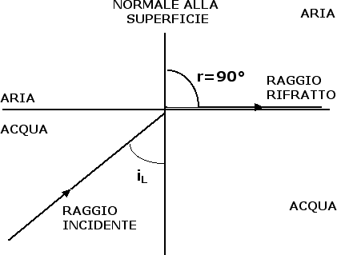

Rifrazione e lenti
La riflessione totale
Nella precedente sezione abbiamo visto che un raggio luminoso, passando dall'aria all'acqua, si avvicina alla normale. Che cosa succede se invece il raggio di luce viene emesso nell'acqua? Continuando a fare riferimento all'esempio visto nella sezione precedente, ci aspettiamo che, se l'angolo di incidenza del raggio luminoso è pari a 29°, il raggio venga rifratto nell'aria formando un angolo di 40° con la normale e un'applicazione corretta della seconda legge della rifrazione ci conferma questa previsione. In altre parole, angolo di incidenza e angolo di rifrazione si scambiano i ruoli e la luce tende a ripercorrere lo stesso cammino: questa caratteristica della luce prende il nome di principio di invertibilità del cammino ottico.
Il fatto che passando dall'acqua all'aria il raggio luminoso si allontani dalla normale alla superficie è all'origine di un fenomeno importante che va sotto il nome di riflessione totale. Siccome l'angolo di rifrazione è sempre maggiore dell'angolo di incidenza, aumentando progressivamente l'angolo di incidenza arriveremo ad un angolo limite in prossimità del quale l'angolo di rifrazione diventa uguale a 90°:

Quanto vale l'angolo limite nel caso in cui i due mezzi siano l'acqua e l'aria? Le leggi della rifrazione implicano sin iL / (sin 90°) = naria / nacqua da cui sin iL = 1 / 1.33 = 0.75 e iL = 49°. Quando l'angolo d'incidenza è maggiore di 49° il raggio rifratto scompare e rimane solo il raggio riflesso. In altre parole la superficie di separazione tra l'acqua e l'aria si comporta come se fosse uno specchio. Questo fenomeno prende il nome di riflessione totale.
Sulla riflessione totale si basa il principio di funzionamento delle fibre ottiche, molto utilizzate per il trasferimento di dati a distanza o negli endoscopi per riuscire a illuminare oggetti che altrimenti sarebbero inaccessibili. Le fibre ottiche sono costituite da materiali trasparenti rivestiti da guaine opache. La luce entra nella fibra ottica con un angolo di incidenza superiore all'angolo limite e si propaga all'interno della fibra subendo una serie di riflessioni totali.